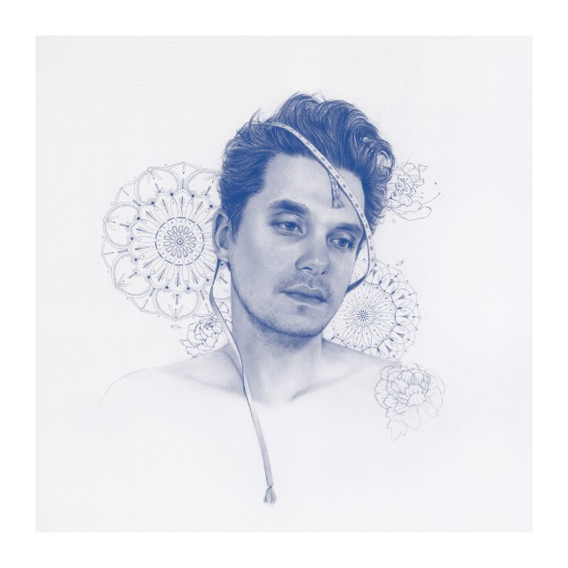
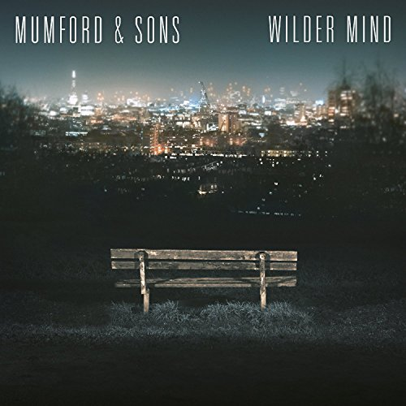
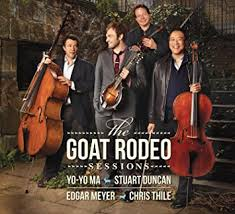

I began by designing simple static websites with Squarespace, and am learning to build dynamic websites with Ruby on Rails!
|  |
John Mayer: "The Search For Everything This mellow album is my Saturday morning go-to. As my husband and I slowly sip our coffee while "Love on the weekend" echoes through the house, I'm reminded that sometimes the little things in life are actually the best things. |
 |
Mumford and Sons: "Wilder Minds" Though I don't always listen to songs with lyrics when I'm working, this album manages to fade into the background. The calm yet upbeat song structure manages to keep coding frustrations at bay, while keeping me energized at the same time. |
|  |
Yo-Yo Ma, Stuart Duncan, Edgar Meyer, Chris Thile: "Goat Rodeo Sessions" When I am looking to be inspired, I listen to these guys. Four prodigies came together to make this album. The result is a collection of songs with weaving melodies, complex instrumental layers and rich sound; all while staying casual due to a strong folk overtone. |
This page has been coded during the
FullStack program @LeWagon.
It was probably the best time of my life! ; )